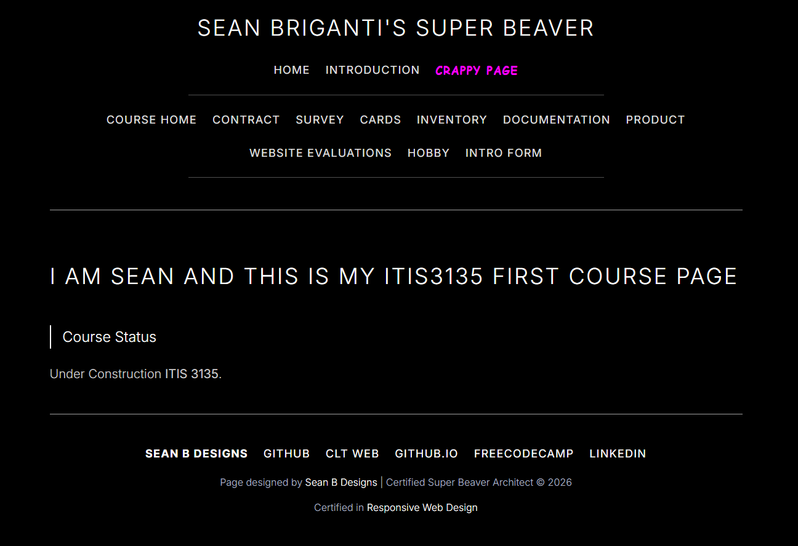

Peer Review 1 - Client Project
Brigante, Sean

Evaluation
- Good: The site has a clear and consistent navigation menu with Home, Portfolio, Services, About, and Contact on each page.
- Good: The branding is strong and consistent. The site clearly presents itself as Peter Bivona Photography and keeps the same visual identity across pages.
- Good: Each page has unique content and a specific purpose. The homepage introduces the brand, the portfolio showcases work, the services page explains packages and pricing, the about page gives background information, and the contact page provides a booking form.
- Good: The footer includes HTML and CSS validation links, which is an important requirement and shows attention to web standards.
- Good: The services page is especially strong because it is organized, easy to read, and clearly explains what each package includes.
- Good: The contact page includes a structured form with useful fields like name, email, type of shoot, preferred date, and message.
- Needs Improvement: The site title/logo in the header appears very minimal as “Bivona .” and could be more descriptive or polished for stronger branding.
- Needs Improvement: Some portfolio item labels seem mismatched or unclear. For example, several captions do not obviously match the visible image descriptions, and one item appears to be misspelled as “Snowy Landscap.”
- Needs Improvement: The About page includes a “What Clients Say” section heading, but there are no visible testimonials under it yet.
- Needs Improvement: The Contact page’s social links section appears abbreviated as “IG X Be Li,” which is not very user-friendly and could be clearer with full labels or icons.
- Needs Improvement: The site is visually strong, but adding a little more detailed client-specific information or business context could make it feel even more complete and realistic.
- Suggestion: Expand the About page by adding actual testimonials under “What Clients Say.”
- Suggestion: Clean up the portfolio captions and correct small spelling or labeling issues.
- Suggestion: Make the social/contact links more readable and obvious for visitors.
- Suggestion: Consider making the logo/header text more distinctive so the brand stands out immediately.
Checklist Summary
- Pass: Consistent navigation across the client project pages.
- Pass: Strong branding and cohesive visual identity.
- Pass: Each page has unique and relevant content.
- Pass: Footer includes HTML and CSS validation links.
- Pass: Contact page includes a functional-looking form structure.
- Partial: Portfolio presentation is strong, but some labels/captions need cleanup.
- Partial: About page is well written, but one section appears unfinished.
- Partial: Social/contact presentation could be clearer for usability.